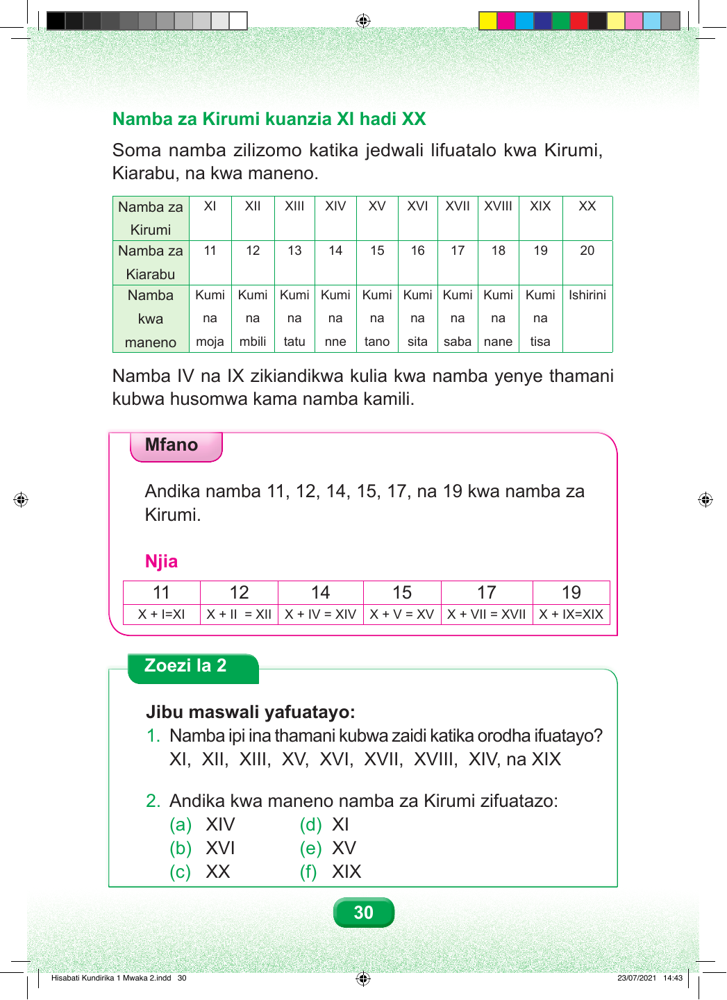

Namba za Kirumi kuanzia kumi na moja hadi ishirini. Soma namba zilizomo katika jedwali lifuatalo kwa Kirumi, Kiarabu, na kwa maneno. Jedwali lina mistari mitatu: namba za Kirumi, namba za Kiarabu, na namba kwa maneno. Tunasoma kila safu wima kwa mpangilio wa namba kumi na moja hadi ishirini. Safu ya kumi na moja. Alama ya Kirumi ni X ikifuatiwa na I moja. Namba ya Kiarabu ni kumi na moja. Kwa maneno ni kumi na moja. Safu ya kumi na mbili. Alama ya Kirumi ni X ikifuatiwa na I mbili. Namba ya Kiarabu ni kumi na mbili. Kwa maneno ni kumi na mbili. Safu ya kumi na tatu. Alama ya Kirumi ni X ikifuatiwa na I tatu. Namba ya Kiarabu ni kumi na tatu. Kwa maneno ni kumi na tatu. Safu ya kumi na nne. Alama ya Kirumi ni X ikifuatiwa na I kabla ya V. Namba ya Kiarabu ni kumi na nne. Kwa maneno ni kumi na nne. Safu ya kumi na tano. Alama ya Kirumi ni X ikifuatiwa na V. Namba ya Kiarabu ni kumi na tano. Kwa maneno ni kumi na tano. Safu ya kumi na sita. Alama ya Kirumi ni X ikifuatiwa na V, halafu I moja. Namba ya Kiarabu ni kumi na sita. Kwa maneno ni kumi na sita. Safu ya kumi na saba. Alama ya Kirumi ni X ikifuatiwa na V, halafu I mbili. Namba ya Kiarabu ni kumi na saba. Kwa maneno ni kumi na saba. Safu ya kumi na nane. Alama ya Kirumi ni X ikifuatiwa na V, halafu I tatu. Namba ya Kiarabu ni kumi na nane. Kwa maneno ni kumi na nane. Safu ya kumi na tisa. Alama ya Kirumi ni X ikifuatiwa na I kabla ya X. Namba ya Kiarabu ni kumi na tisa. Kwa maneno ni kumi na tisa. Safu ya ishirini. Alama ya Kirumi ni herufi X mbili. Namba ya Kiarabu ni ishirini. Kwa maneno ni ishirini. Katika mifano ya kumi na nne na kumi na tisa, alama ya nne au ya tisa imewekwa upande wa kulia wa X. Kwa hiyo, thamani yake huongezwa kwenye kumi na kusomwa kama namba kamili. Mfano. Andika namba kumi na moja, kumi na mbili, kumi na nne, kumi na tano, kumi na saba, na kumi na tisa kwa namba za Kirumi. Njia. Soma kila safu kwa kuanzia namba ya Kiarabu, kisha hatua ya kuunda alama ya Kirumi. Safu ya kwanza, namba kumi na moja. Safu ya pili, namba kumi na mbili. Safu ya tatu, namba kumi na nne. Safu ya nne, namba kumi na tano. Safu ya tano, namba kumi na saba. Safu ya sita, namba kumi na tisa. Kumi jumlisha moja ni kumi na moja. X ikifuatiwa na I moja huunda alama ya kumi na moja. Kumi jumlisha mbili ni kumi na mbili. X ikifuatiwa na I mbili huunda alama ya kumi na mbili. Kumi jumlisha nne ni kumi na nne. X ikifuatiwa na I kabla ya V huunda alama ya kumi na nne. Kumi jumlisha tano ni kumi na tano. X ikifuatiwa na V huunda alama ya kumi na tano. Kumi jumlisha saba ni kumi na saba. X ikifuatiwa na V na I mbili huunda alama ya kumi na saba. Kumi jumlisha tisa ni kumi na tisa. X ikifuatiwa na I kabla ya X huunda alama ya kumi na tisa. Zoezi la Pili. Jibu maswali yafuatayo. Swali namba moja. Namba ipi ina thamani kubwa zaidi katika orodha ifuatayo? Alama ya kwanza, X ikifuatiwa na I moja. Ya pili, X ikifuatiwa na I mbili. Ya tatu, X ikifuatiwa na I tatu. Ya nne, X ikifuatiwa na V. Ya tano, X ikifuatiwa na V na I moja. Ya sita, X ikifuatiwa na V na I mbili. Ya saba, X ikifuatiwa na V na I tatu. Ya nane, X ikifuatiwa na I kabla ya V. Ya tisa, X ikifuatiwa na I kabla ya X. Bainisha alama yenye thamani kubwa zaidi. Swali namba mbili. Andika kwa maneno namba za Kirumi zifuatazo. Sehemu a. X ikifuatiwa na I kabla ya V. Sehemu d. X ikifuatiwa na I moja. Sehemu b. X ikifuatiwa na V na I moja. Sehemu e. X ikifuatiwa na V. Sehemu c. Herufi X mbili. Sehemu f. X ikifuatiwa na I kabla ya X.